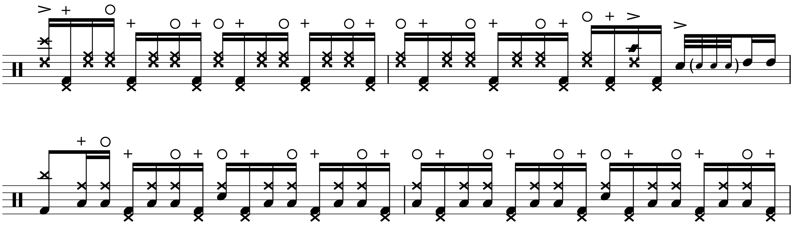
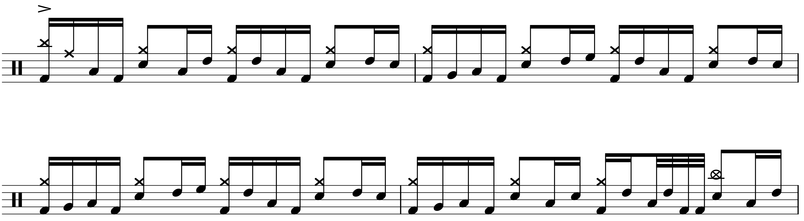
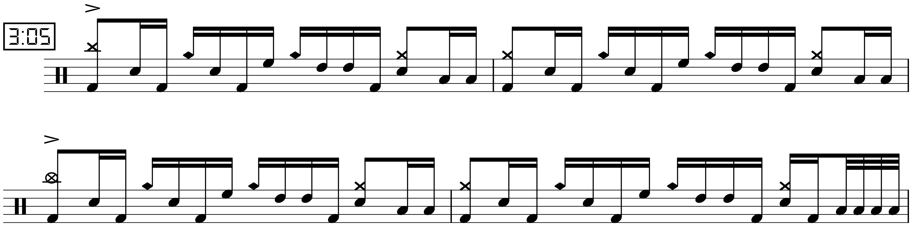

Transcription: “Stars” — Ray Luzier with KXM
Posted on May 9, 2021

I have a big list of drummers that I need to listen to more. In fact, for most of the drummers I know of, I have yet to fully explore and appreciate their discographies. When you first hear about an artist, you’re often not sure where to even begin. For many, the simple approach is to just punch something in on YouTube.
I feel a bit uneasy about doing that; in the case of drummers, you’re likely to get some live drum solo; however, I regard albums to be more musically important (i.e. drumming played on actual records). However, within the last five years, it’s become very popular for drummers to do video play alongs of album tracks. Case in point, this video of Ray Luzier that was released in the summer of 2015:
I found it sometime in the spring semester of my freshmen year in college — I’m sure I had just gone to YouTube and searched “Ray Luzier”. Ray is probably best known for his drumming for Korn, a gig he’s had since 2007 (he’s also known as the best musician in Korn). However, the song in this video is from another project that Ray started in 2013 called KXM. “Stars” comes from the self–titled debut, released in 2014.
The song is pretty much a straight–ahead rock number, with some lyrics that are a bit… mawkish (“you don’t see the stars, ‘till it’s really dark outside, oh noOoOoOOOooo”). The song is also driven by the seemingly ubiquitous tresillo rhythm, although Ray plays a rather unusual groove over it, featuring rim clicks and hi-hat barks.
When the verse starts up, you can hear a call and response thing going on: Ray uses the rim clicks for two bars with the vocals, before switching to the floor tom for two bars when the vocals drop out:
Things get very interesting during the chorus when Ray uses a pretty intricate Songo–type pattern:
I should probably talk about the toms. As you can see, Ray has quite the setup! Thankfully (for me) most of it isn’t used on this video. I’ve notated the two rack toms and the first floor tom on his right as normal. Ray has an 18–inch floor tom on his left (what I call Keith Moon style), which I have notated as the lowest floor tom.
For the bridge, Ray does another Songo groove. Notice how he only hits the bell on beats two and three, while he hits the ride on one and three. Very unusual:
Ray saves the double kick for the fills, where the name of the game is 32nd quad fills (RLKK). I’ve described the quad fill and the tresillo rhythm as being occasionally overused and even abused. But they’re both dependable, so they’re popular for a reason. Ray gets a bit creative with the orchestrations — I’m a big fan of these two fills:
One of the highlights of the performance comes at the end of the bridge when the song features a big vocal build–up. On the album, Ray uses his rim click groove, but on the video, he uses the section as an opportunity for a drum solo:
While most of the licks are built around quad fills, you should be able to spot some six–note patterns, played the same as the triplets from earlier, RLRLKK.
The last chunk of the song I covered is the outro, which features some more outrageous fills that aren’t heard on the album. Here Ray milks the quad fill for all it’s worth. It’s a lengthy barrage of notes and it’s impressive that Ray doesn’t get lost in his own playing.
Nowadays, when I find a playthrough on YouTube I’m usually drawn to the album version since that’s what I value as a musician. Aside from the wild fills, it sounds like Ray plays things pretty close to the original. Truth be told, if I didn’t have the video, I probably would’ve had a much harder time figuring it all out.
“Stars” on Songwhip (in case you want to know what the album version sounds like).
Tags: 2021 • Transcription • Ray Luzier • KXM